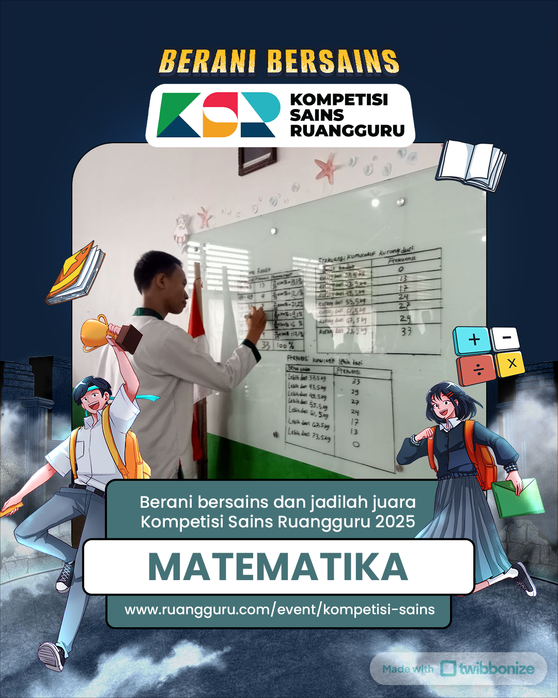

Tentang Saya
Selamat datang di portofolio saya. Saya adalah seorang siswa Man 2 Palembang yang tinggal di kota palembang, dengan minat saya dalam matematika
Silakan jelajahi karya-karya saya di halaman 'Work'. Jika Anda tertarik untuk berkolaborasi atau memiliki pertanyaan, jangan ragu untuk menghubungi saya melalui halaman 'Contact'.